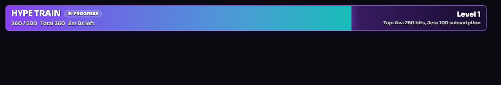
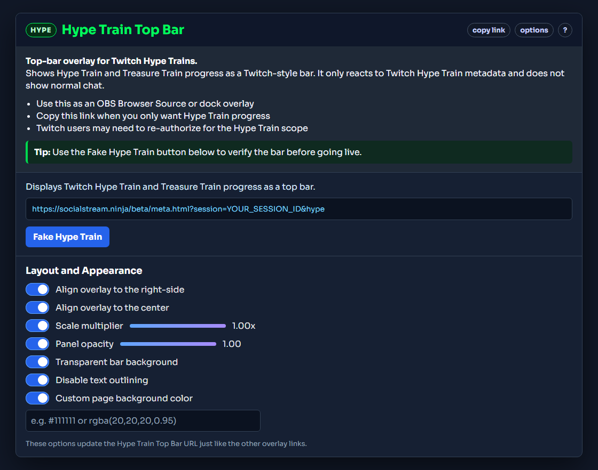

What this overlay does
The Hype Train Top Bar is a dedicated overlay for Twitch Hype Train and Treasure Train events. It shows the current level, progress, total, timer, and top contributors in a top-bar style layout.
It does not show normal chat messages. Hype Train data is metadata-only, so the bar updates when Twitch sends a Hype Train event.

Before you start
- Use Twitch WebSocket mode for Twitch event capture.
- If prompted, re-authorize Twitch so Social Stream Ninja can request the
channel:read:hype_trainscope. - Add the Hype Train Top Bar as a browser source, not as a normal chat overlay.
Important: A Hype Train will not appear in the normal chat overlay. Use the Hype Train Top Bar, the Meta Data Bar, or
events.html to see it.
Set it up from the popup
- Open the Social Stream Ninja popup.
- Find Hype Meter and Viewer Count.
- Copy the Hype Train Top Bar link.
- Add that link to OBS as a Browser Source.
- Use the Fake Hype Train button to confirm the bar appears.

Tip: The copied URL includes
&hype, which makes the overlay focus on Hype Train and Treasure Train events.
Customize the bar
The Hype Train Top Bar options work like the other overlay options in the popup. Toggle an option, then copy the updated link again.
- Align overlay to the right-side: places the bar against the right edge.
- Align overlay to the center: centers the bar horizontally.
- Scale multiplier: makes the bar smaller or larger.
- Panel opacity: adjusts the whole bar opacity.
- Transparent bar background: removes the filled background behind the bar.
- Disable text outlining: removes the black text shadow.
- Custom page background color: useful when testing outside OBS or when you want a non-transparent page background.
Testing options
- Use Fake Hype Train in the popup for the quickest test.
- Use
sampleapi.htmland select a Hype Train preset if you want to test through the API route. - Use
events.htmlif you want to confirm the raw Twitch Hype Train event is being received.
If it does not show
- Confirm your Twitch account was re-authorized after Hype Train support was added.
- Confirm the copied overlay URL has the same session ID as the Social Stream Ninja popup.
- Confirm the URL includes
&hype. - Test with the Fake Hype Train button.
- Open
events.htmlwith the same session to verify Hype Train metadata is arriving.